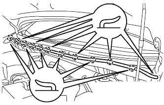
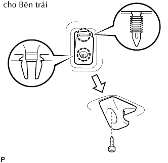

KÍNH CHẮN GIÓ > LẮP |
| 1. LẮP ĐỆM KÍNH CHẮN GIÓ |
Bôi sơn lót G lên kính ở đó có lắp các miếng đệm.
Lắp 2 miếng đệm mới vào kính như được chỉ ra trên hình vẽ.
| Vùng | Điều kiện tiêu chuẩn |
| a | 7.7 mm (0.303 in.) |
| b | 40.0 mm (1.575 in.) |
| 2. LẮP CÁI HÃM KÍNH CHẮN GIÓ NO.1 |
Lắp 2 cái hãm lên xe như được chỉ ra trên hình vẽ.
| 3. LẮP KEO DÁN KÍNH CỬA SỔ |
Bôi sơn lót G lên kính ở đó có lắp các đệm kính.
Bóc dây ra khỏi phần dính của đệm kính. Lắp đệm kính (phía keo) vào kính (Vùng sơn lót G), nhưng trừ vùng đệm A như được chỉ ra trong hình vẽ.

| Vùng | Điều kiện tiêu chuẩn |
| a | 7.0 mm (0.276 in.) |
| 4. LẮP KÍNH CHẮN GIÓ |
 |
Định vị kính.
Dùng các giác hút, đặt kính vào đúng vị trí.
Kiểm tra rằng bề mặt tiếp xúc của toàn bộ mép kính là đều nhau.
Đặt các dấu ghi nhớ trên kính và thân xe ở các vị trí như được chỉ ra trên hình vẽ.
Dùng các giác hút, tháo kính.
Dùng chổi hoặc miếng mút, bôi sơn lót M lên phần lộ ra của thân xe.
Dùng chổi hoặc miếng mút, bôi sơn lót G lên mặt tiếp xúc của kính.
Hãy bôi keo vào kính.
Cắt đầu của các vòi keo như được chỉ ra trên hình vẽ.
| Nhiệt độ | Khung thời gian sử dụng |
| 35°C (95°F) | 15 phút |
| 20°C (68°F) | 1 giờ 40 phút |
| 5°C (41°F) | 8 giờ |
Lắp ống keo lên súng bắn keo.
Bôi keo làm kín lên kính như trên hình vẽ.
| Vùng | Điều kiện tiêu chuẩn |
| a | 12.0 mm (0.472 in.) |
| b | 8.0 mm (0.315 in.) |
| c | 3.0 mm (0.118 in.) |
| d | 18.3 mm (0.720 in.) |
Lắp kính cửa vào thân xe.
Dùng các giác hút, định vị kính sao cho các dấu ghi nhớ được gióng thẳng. Hãy ấn nhẹ dọc theo vành.
Eùp nhẹ mặt trước của kính để đảm bảo rằng kính đã được lắp chắc chắn lên thân xe.
Giữ kính chắc tại vị trí bằng băng dính hay tương đương cho đến khi keo đông cứng hẳn.
| 5. LẮP NẸP BÊN NGOÀI KÍNH CHẮN GIÓ |
Dùng chổi hoặc miếng mút, bôi sơn lót G lên mặt tiếp xúc của kính mà ở đó sẽ lắp nẹp mới vào.
Gióng thẳng các dấu của nẹp với vấu kính và lắp nẹp trước khi keo kính khô.
| Nhiệt độ | Thời gian tối thiểu trước khi lái xe |
| 35°C (95°F) | 1 giờ 30 phút |
| 20°C (68°F) | 5 giờ |
| 5°C (41°F) | 24 giờ |
| 6. LẮP NỐI TAI XE TRONG VỚI VÁCH NGẮN TRÁI |
| 7. LẮP NỐI TAI XE TRONG VỚI VÁCH NGĂN PHẢI |
| 8. LẮP CỤM MÁNG THÔNG GIÓ TRÊN VÁCH TÁP LÔ TRÁI |
 |
Gắn 5 khóa cài và 4 kẹp, và lắp nắp.
Lắp vít.
| 9. LẮP CỤM MÁNG THÔNG GIÓ TRÊN VÁCH TÁP LÔ PHẢI |
 |
Gắn 5 khóa cài và 4 kẹp, và lắp nắp.
Lắp vít.
| 10. LẮP GIOĂNG PHÍA TRÊN TỪ NẮP CAPÔ ĐẾN VÁCH NGĂN |
|  |
Gắn 2 kẹp và lắp phớt.
| 11. LẮP CỤM TAY GẠT VÀ LƯỠI GẠT NƯỚC TRƯỚC TRÁI |
 |
Lau rãnh khía của tay gạt nước với dũa tròn hay tương được.
Lau rãnh khía của chốt quay tay gạt nước với dũa tròn hay tương đương.
 |
Lắp tay và lưỡi gạt bằng đai ốc. Chắc chắn rằng tay và lưỡi gạt đến vị trí như trong hình vẽ.
Hoạt động gạt mưa trước trong khi phun nước lên kính chắn gió. Chắc chắn rằng không có va chạm giữa lưỡi gạt và trụ.
| 12. LẮP CỤM TAY GẠT VÀ LƯỠI GẠT NƯỚC TRƯỚC PHẢI |
|
Dừng môtơ gạt nước ở ở vị trí ngừng tự động.
Lau rãnh khía của tay gạt nước với dũa tròn hay tương được.
Lau rãnh khía của chốt quay tay gạt nước với dũa tròn hay tương đương.
 |
Lắp tay gạt và lưỡi gạt sao cho lưỡi gạt và tay gạt ở vị trí như trong hình vẽ.
| 13. LẮP NẮP CHE ĐẦU TAY GẠT NƯỚC PHÍA TRƯỚC |
| 14. LẮP CỤM ỐP TRẦN XE |
 |
Gióng dây điện vào các dấu và sau đó lắp dây điện bằng băng dính.
 |
Lắp lót trần xe bằng 8 kẹp.
| 15. LẮP TAY NẮM |
Lắp tay nắm bằng 2 vít.
 |
Nhả khớp 4 vấu và đóng 2 nắp.
| 16. LẮP GIÁ ĐỠ CHẮN NẮNG BÊN TRÁI |
|  |
Cài khớp 2 vấu để lắp giá đỡ.
Lắp vít.
| 17. LẮP GIÁ ĐỠ CHẮN NẮNG PHẢI |
Cài khớp 2 vấu để lắp giá đỡ.
Lắp vít.
| 18. LẮP CỤM CHẮN NẮNG TRÁI |
Lắp chắn nắng bằng 2 vít.
| 19. LẮP CỤM CHẮN NẮNG PHẢI |
Lắp chắn nắng bằng 2 vít.
| 20. LẮP CỤM ĐÈN XEM BẢN ĐỒ (w/ Đèn xem bản đồ) |
 |
Nối giắc nối đèn.
Lắp đèn soi bản đồ bằng 2 vít như trong hình vẽ.
| 21. LẮP TRANG TRÍ TRỤ XE TRƯỚC TRÁI |
Lắp ốp trang trí bên dưới vào miếng ốp.
 |
Cài khớp 3 vấu và 3 kẹp để lắp ốp trang trí.
| 22. LẮP TRANG TRÍ TRỤ XE TRƯỚC PHẢI |
| 23. LẮP TRANG TRÍ TRỤ XE TRƯỚC TRÁI |
Lắp ốp trang trí bên dưới vào miếng ốp.
|
Cài khớp 3 vấu và 3 kẹp để lắp ốp trang trí.
| 24. THÁO TRANG TRÍ DƯỚI TRỤ XE TRƯỚC PHẢI |
| 25. LẮP TRANG TRÍ BẬU CỬA TRƯỚC TRÁI |
| 26. LẮP GIOĂNG CỬA TRƯỚC PHẢI |
| 27. LẮP CỤM GƯƠNG CHIẾU HẬU BÊN TRONG |
Install the mirror in the direction of the white arrow.
Install the cover as shown in the illustration.
| 28. KIỂM TRA RÒ RỈ VÀ SỬA CHỮA |
Tiến hành thử rò rỉ sau khi keo làm kín đã đông cứng hoàn toàn.
Hàn bất cứ chỗ hở nào bằng keo kính.
| 29. NỐI CÁP VÀO CỰC ÂM ẮC QUY |
| 30. TIẾN HÀNH THIẾT LẬP BAN ĐẦU |
Tiến hành thiết lập ban đầu (Xem trang Kích chuột vào đây).